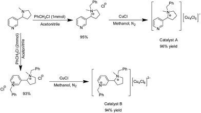
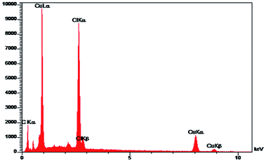
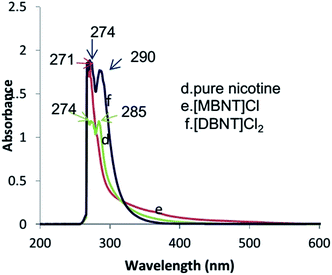
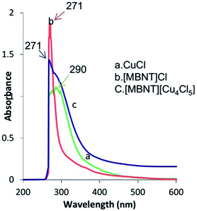
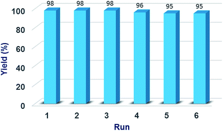

Copper(I) catalyzed Sonogashira reactions promoted by monobenzyl nicotinium chloride, a N-donor quaternary ammonium salt†
Abdol Reza Hajipour*ab,
Elaheh Boostania and
Fatemeh Mohammadsaleha
aPharmaceutical
Research Laboratory, Department of Chemistry, Isfahan University of
Technology, Isfahan 84156, Islamic Republic of Iran. E-mail: haji@cc.iut.ac.ir; arhajipour@wisc.edu; Fax: +98 313 391 2350; Tel: +98 313 391 3262
bDepartment of Pharmacology, University of Wisconsin, Medical School, 1300 University Avenue, Madison, 53706-1532, WI, USA
First published on 27th October 2015
A novel and effective catalytic system using monobenzylnicotinium chloride combined with copper(I) chloride was employed for the first time in Sonogashira cross-coupling reactions of phenylacetylene with various aryl halides. The goal was to use an efficient green media by using copper instead of palladium in metal-catalyzed coupling reactions. Monobenzyl nicotinium chloride, a quaternary ammonium salt containing a coordinating centre, plays an important role in this catalytic system and increases the efficiency of Cu(I) species during the reaction. A number of internal alkynes were produced in moderate to excellent yields in short reaction times in DMF at 135–140 °C. The efficiency of this catalytic system was compared with the copper-based catalyst obtained from dibenzylnicotinium chloride which has no N-donor active site, wherein lower activity was observed due to lack of a coordination site.
Introduction
Coupling of aryl halides with terminal acetylene in the Sonogashira reaction is one of the most applicable metal-catalyzed carbon–carbon cross-coupling reactions. There is a wide range of applications for compounds containing carbon–carbon triple bonds, especially aryl alkynes and conjugated enynes, include pharmaceuticals, natural products, antibiotics, drug intermediates, etc.1–9In recent years, a variety of competitive methods for the formation of aryl–nucleophile bonds such as C–C, C–N and also C–O have been developed in cross-coupling chemistry.10–14 Quaternary ammonium and phosphonium salts (Q+ X−) have been highly successful in enhancing the reactivity and selectivity of metal catalyzed organic reactions. The efficiency of these systems is due to the metal nanoparticles stabilized by quaternary salts and/or the formation of a new catalytic system.15–17 Therefore, tremendous attentions have been given to develop these catalytic systems.
The original catalytic system for Sonogashira couplings involve the use of palladium catalyst and a copper(I) salt as a co-catalyst.1,18 Many different synthetic methods based on copper-free palladium catalysts have been reported for this reaction,19 but the use of effective palladium-free systems is much more interesting in view of modern organic synthesis, due to the cost of palladium and its pollution. Recent attention has been concerned with employing copper-only catalytic systems in Sonogashira coupling reactions.19 Combinations of copper salts and ligands have been reported as efficient catalytic systems for this C–C bond formation. High catalytic activity and selectivity are important parameters for these copper-assisted catalytic systems. Various ligands, such as triphenylphosphine,20 1,10-phenanthroline,21 ethylenediamine,22 N,N-dimethylglycine,23 1,4-diazabicyclo[2.2.2]-octane (DABCO),24,25 choline chloride,26 N-benzyl DABCO,27 have been investigated for this reaction system. Recently, we have used dibenzyl nicotinium chloride as the promoter in palladium-catalyzed C–C and C–S coupling reactions.28,29 By investigation of a series of nicotine-derived ammonium salts as catalysts for chemical fixation of carbon dioxide into cyclic carbonates, it was found that monobenzylnicotinium bromide showed a much higher activity than dibenzylnicotinium bromide.30 We have also reported the catalytic activity of Cu4Cl5 species in combination with 1-benzyl-4-aza-1-azoniabicyclo[2.2.2]octane chloride (N-benzyl DABCO chloride) in Sonogashira coupling reactions.27 In continuation of our recent studies on the development of catalytic systems containing quaternary ammonium and phosphonium salts,17,25–27 herein, we report the new catalytic system [MBNT]+[Cu4Cl5]− as an effective catalyst for palladium free Sonogashira cross-coupling reactions. To date, only a few reports are available for the preparation and catalytic investigation of copper(I) complexes containing ammonium salts and Cu4Cl5.31–33
Results and discussion
The new catalytic system [MBNT][Cu4Cl5] was prepared by the reaction of 1-benzyl-1-methyl-2-(pyridin-3-yl)pyrrolidin-1-ium chloride ([MBNT]Cl) with fresh CuCl in methanol solvent. The structure of synthesized [MBNT][Cu4Cl5] (catalyst A) was suggested as shown in Scheme 1.|  | ||
| Scheme 1 The catalyst A and catalyst B preparation. | ||
{kind=link}
The reaction of 1-benzyl-3-(1-benzyl-1-methylpyrrolidin-1-ium-2-yl)-pyridin-1-ium dichloride ([DBNT]Cl2) with CuCl in methanol reflux gave the [DBNT][Cu4Cl6] complex,34 which is shown as catalyst B in Scheme 1.
Monobenzylnicotininium chloride [MBNT]Cl as a quaternary ammonium salt containing a coordinating center plays an important role and increases the efficiency of Cu(I) species during the reaction to create an effective and stable catalytic system, so it plays a role more than a counter ion in this system. While dibenzyl nicotinium dichloride [DBNT]Cl2 does not have any coordinating center as a ligand to interact with Cu(I) species during the reaction, and therefore shows a less successful performance compared with [MBNT]Cl in this copper catalyzed coupling reaction. Hence, we continued further studies using the catalyst A.
[MBNT][Cu4Cl5] catalyst comprises both N-donor ligand and quaternary salt. [MBNT] cation as an efficient ligand and also a quaternary salt had significant stabilizing effect on the Cu(I) species. The quaternary ammonium salt prevents non-stable Cu(I) species from air and aggregation.
Mys'kiv et al. reported the species [Cu4Cl5]− as counter anion for the quaternary ammonium cation N,N′-diallylmorpholinium.31 In addition, Flonani et al. have investigated a special structure for the species [Cu4Cl5]−.33 This information, and also the results obtained from the CHN and ICP analysis of our compound helped us to characterize the catalyst A as [MBNT][Cu4Cl5].
By the EDX analysis the presence of copper in the catalyst was also approved (Fig. 1).
|  | ||
| Fig. 1 EDX spectrum of the catalyst A. | ||
{kind=link}
To investigate the optical properties, UV-Vis analysis was examined for the samples in DMSO solution at room temperature. Fig. 2 illustrates a comparison of the absorption spectra of pure nicotine, [MBNT]Cl and [DBNT]Cl2. As shown in spectra, [MBNT]Cl spectrum has a sharp absorption in 271 nm and [DBNT]Cl2 shows two sharp absorption in 274 nm and 290 nm. Pure nicotine has almost two absorption, a broad one in 271–274 nm and a sharp peak in 285 nm.
|  | ||
| Fig. 2 UV-Vis absorption spectra of pure nicotine, [MBNT]Cl, [DBNT]Cl2. | ||
{kind=link}
Optical properties of the catalyst A were also examined by UV-Vis spectroscopy at room temperature in DMSO solvent. Fig. 3 shows the absorbance spectra of [MBNT]Cl, CuCl and [MBNT][Cu4Cl5]. The UV-Vis spectrum of [MBNT]Cl shows a sharp absorption band at 271 nm. The CuCl absorption spectrum displays a broadening absorption band at around 290 nm. In the spectrum of catalyst A two absorption bands at around 271 nm and 290 nm are observed.
|  | ||
| Fig. 3 UV-Vis absorption spectra, comparison between pure CuCl, [MBNT]Cl and [MBNT][Cu4Cl5] spectra. | ||
{kind=link}
The catalytic performance of the catalyst A was examined in palladium-free Sonogashira cross coupling reactions. To evaluate the optimized reaction conditions, a series of screening experiments was carried out in cross coupling of iodobenzene with phenylacetylene. We examined the effect of various reaction parameters including the solvent, base and temperature on the yields of the coupling products as shown in Table 1. The results demonstrated that the optimized conditions were as follows: DMF as the solvent, K3PO4·3H2O (3 eq.) as the base, 140 °C and the catalyst loading 5 mol% (Table 1, entry 9).
| Entry | Solvent | Temp (°C) | Base (equiv.) | Catalyst (mol%) | Yieldb (%) | ||||||||||||||||||||||||||||||||||||||||||||||||||||||||||||||||||||||||||||||||||||||||||||||
|---|---|---|---|---|---|---|---|---|---|---|---|---|---|---|---|---|---|---|---|---|---|---|---|---|---|---|---|---|---|---|---|---|---|---|---|---|---|---|---|---|---|---|---|---|---|---|---|---|---|---|---|---|---|---|---|---|---|---|---|---|---|---|---|---|---|---|---|---|---|---|---|---|---|---|---|---|---|---|---|---|---|---|---|---|---|---|---|---|---|---|---|---|---|---|---|---|---|---|---|
| a Reaction conditions: iodobenzene (1 mmol), phenylacetylene (1.1 mmol), oil bath, N2 atmosphere.b GC yield.c In the presence of catalyst B. | |||||||||||||||||||||||||||||||||||||||||||||||||||||||||||||||||||||||||||||||||||||||||||||||||||
| 1 | DMSO | 140 | t-BuOK (3) | 10 | 46 | ||||||||||||||||||||||||||||||||||||||||||||||||||||||||||||||||||||||||||||||||||||||||||||||
| 2 | DMF | 140 | t-BuOK (3) | 10 | 79 | ||||||||||||||||||||||||||||||||||||||||||||||||||||||||||||||||||||||||||||||||||||||||||||||
| 3 | NMP | 140 | t-BuOK (3) | 10 | 28 | ||||||||||||||||||||||||||||||||||||||||||||||||||||||||||||||||||||||||||||||||||||||||||||||
| 4 | DMF | 140 | KOH (3) | 10 | 49 | ||||||||||||||||||||||||||||||||||||||||||||||||||||||||||||||||||||||||||||||||||||||||||||||
| 5 | DMF | 140 | K2CO3 (3) | 10 | 62 | ||||||||||||||||||||||||||||||||||||||||||||||||||||||||||||||||||||||||||||||||||||||||||||||
| 6 | DMF | 140 | K3PO4·3H2O (3) | 10 | 97 | ||||||||||||||||||||||||||||||||||||||||||||||||||||||||||||||||||||||||||||||||||||||||||||||
| 7 | DMF | 140 | K3PO4·3H2O (2) | 10 | 88 | ||||||||||||||||||||||||||||||||||||||||||||||||||||||||||||||||||||||||||||||||||||||||||||||
| 8 | DMF | 140 | K3PO4·3H2O (1) | 10 | 43 | ||||||||||||||||||||||||||||||||||||||||||||||||||||||||||||||||||||||||||||||||||||||||||||||
| 9 | DMF | 140 | K3PO4·3H2O (3) | 5 | 95 | ||||||||||||||||||||||||||||||||||||||||||||||||||||||||||||||||||||||||||||||||||||||||||||||
| 10 | DMF | 140 | K3PO4·3H2O (3) | 1 | 15 | ||||||||||||||||||||||||||||||||||||||||||||||||||||||||||||||||||||||||||||||||||||||||||||||
| 11 | DMF | 130 | K3PO4·3H2O (3) | 5 | 39 | ||||||||||||||||||||||||||||||||||||||||||||||||||||||||||||||||||||||||||||||||||||||||||||||
| 12 | DMF | 140 | K3PO4·3H2O (3) | 0 | — | ||||||||||||||||||||||||||||||||||||||||||||||||||||||||||||||||||||||||||||||||||||||||||||||
| 13 | DMF | 140 | K3PO4·3H2O (3) | 5c | 32 | ||||||||||||||||||||||||||||||||||||||||||||||||||||||||||||||||||||||||||||||||||||||||||||||
{kind=link}
As a comparative study, to obtain more information about the effects of coordination sites in the cation part on the reaction system, [DBNT][Cu4Cl6] (catalyst B) in which the cation [DBNT] has no N-donor active centre was investigated. The results showed that by employing [DBNT][Cu4Cl6] as the catalyst in the reaction of iodobenzene with phenylacetylene under the optimized reaction conditions, the corresponding alkyne product was obtained only in 32% yield after 5 h (Table 1, entry 13), however, the catalyst A, under the same reaction conditions, afforded 95% yield of the corresponding Sonogashira product. This result indicated that the effect of the coordination sites in the cation part was an important factor in the efficiency of the catalyst A, in which the nitrogen-coordinating site of cation part can effectively activate and stable the Cu(I) species during the reaction. Hence, [MBNT][Cu4Cl5] was chosen as the benchmark catalyst in this study and applied to the palladium-free copper catalyzed Sonogashira cross-coupling reactions of various aryl halides with phenylacetylene (Table 2) under the optimized parameters.
| Entry | R | X | Time (h) | Yieldb (%) | |||||||||||||||||||||||||||||||||||||||||||||||||||||||||||||||||||||||||||||||||||||||||||||||
|---|---|---|---|---|---|---|---|---|---|---|---|---|---|---|---|---|---|---|---|---|---|---|---|---|---|---|---|---|---|---|---|---|---|---|---|---|---|---|---|---|---|---|---|---|---|---|---|---|---|---|---|---|---|---|---|---|---|---|---|---|---|---|---|---|---|---|---|---|---|---|---|---|---|---|---|---|---|---|---|---|---|---|---|---|---|---|---|---|---|---|---|---|---|---|---|---|---|---|---|
| a Reaction conditions: aryl halide (1 mmol), phenylacetylene (1.1 mmol), K3PO4·3H2O (3 mmol), DMF (3 ml), catalyst [MBNT][Cu4Cl5] (5 mol%), N2 atmosphere.b Isolated yield. | |||||||||||||||||||||||||||||||||||||||||||||||||||||||||||||||||||||||||||||||||||||||||||||||||||
| 1 | H | I | 5 | 91 | |||||||||||||||||||||||||||||||||||||||||||||||||||||||||||||||||||||||||||||||||||||||||||||||
| 2 | H | Br | 7 | 55 | |||||||||||||||||||||||||||||||||||||||||||||||||||||||||||||||||||||||||||||||||||||||||||||||
| 3 | H | Cl | 8 | 43 | |||||||||||||||||||||||||||||||||||||||||||||||||||||||||||||||||||||||||||||||||||||||||||||||
| 4 | 4-MeO | I | 8 | 88 | |||||||||||||||||||||||||||||||||||||||||||||||||||||||||||||||||||||||||||||||||||||||||||||||
| 5 | 4-MeO | Br | 10 | 20 | |||||||||||||||||||||||||||||||||||||||||||||||||||||||||||||||||||||||||||||||||||||||||||||||
| 6 | 4-NO2 | I | 1.5 | 91 | |||||||||||||||||||||||||||||||||||||||||||||||||||||||||||||||||||||||||||||||||||||||||||||||
| 7 | 3-NO2 | I | 1.5 | 98 | |||||||||||||||||||||||||||||||||||||||||||||||||||||||||||||||||||||||||||||||||||||||||||||||
| 8 | 4-NO2 | Br | 5 | 80 | |||||||||||||||||||||||||||||||||||||||||||||||||||||||||||||||||||||||||||||||||||||||||||||||
| 9 | 2-NO2 | Br | 8 | 38 | |||||||||||||||||||||||||||||||||||||||||||||||||||||||||||||||||||||||||||||||||||||||||||||||
| 10 | 4-CN | I | 2.5 | 73 | |||||||||||||||||||||||||||||||||||||||||||||||||||||||||||||||||||||||||||||||||||||||||||||||
| 11 | 4-CN | Br | 7.5 | 41 | |||||||||||||||||||||||||||||||||||||||||||||||||||||||||||||||||||||||||||||||||||||||||||||||
| 12 | 4-CHO | Br | 12 | 59 | |||||||||||||||||||||||||||||||||||||||||||||||||||||||||||||||||||||||||||||||||||||||||||||||
| 13 | 4-MeCO | Cl | 18 | 21 | |||||||||||||||||||||||||||||||||||||||||||||||||||||||||||||||||||||||||||||||||||||||||||||||
| 14 | 4-I | I | 0.75 | 85 | |||||||||||||||||||||||||||||||||||||||||||||||||||||||||||||||||||||||||||||||||||||||||||||||
| 15 | 4-Br | Br | 4 | 20 | |||||||||||||||||||||||||||||||||||||||||||||||||||||||||||||||||||||||||||||||||||||||||||||||
| 16 | 4-Cl | Br | 18 | 70 | |||||||||||||||||||||||||||||||||||||||||||||||||||||||||||||||||||||||||||||||||||||||||||||||
| 17 | 3-Cl | Br | 13 | 44 | |||||||||||||||||||||||||||||||||||||||||||||||||||||||||||||||||||||||||||||||||||||||||||||||
| 18 | 2-Cl | Br | 15 | 5 | |||||||||||||||||||||||||||||||||||||||||||||||||||||||||||||||||||||||||||||||||||||||||||||||
| 19 | 9-Bromophenanthrene | 6 | 62 | ||||||||||||||||||||||||||||||||||||||||||||||||||||||||||||||||||||||||||||||||||||||||||||||||
| 20 | 1-Bromonaphthalene | 10 | 40 | ||||||||||||||||||||||||||||||||||||||||||||||||||||||||||||||||||||||||||||||||||||||||||||||||
| 21 | 2-Bromopyridine | 5 | 95 | ||||||||||||||||||||||||||||||||||||||||||||||||||||||||||||||||||||||||||||||||||||||||||||||||
{kind=link}
The electronic and steric effects of various substituted aryl halides were studied in these reactions. This catalyst complex was found to be compatible with a wide range of functional groups such as halogen, cyano, nitro, methoxy and carbonyl on aryl halides. The aryl halides bearing electron-withdrawing groups in comparison to the electron-rich aryl halides gave better conversions in shorter reaction times. The steric hindrance effects of the procedure were examined using 2-bromonitrobenzene (Table 2, entry 9) and 2-bromochlorobenene (Table 2, entry 18). An increasing hindrance in the vicinity of the leaving group led to a decrease in the conversion.
As shown in Table 2, most aryl iodides were successfully reacted with phenylacetylene to afford the corresponding alkyne products in excellent yields. Aryl bromides also converted to the corresponding Sonogashira products. However, the reactivity of aryl bromides was lower than that of the aryl iodides and they required longer times giving lower yields. Substituent effects in the aryl iodides were less significant than those in the aryl bromides. For example, coupling of 4-bromoanisole with phenylacetylene (Table 2, entry 5) was very slow compared with those of 4-iodoanisole (Table 2, entry 4). Although aryl chlorides are cheaper and more readily available, they are less reactive substrates than aryl iodides and bromides in this reaction system.
The reusability of catalyst is an important topic in the field of catalysis that is commonly attributed to its stability. We examined the possibility of recovery and reuse of the catalyst A using the Sonogashira reaction between phenylacetylene and 3-nitroiodobenzene as the substrates under the same conditions reported in Table 2. After each run, the reaction solvent was removed to obtain a solid mixture, which washed with methanol several times to separate the resulting coupled product and dried. Then, the resulting mixture was reused directly for the next run without further purification. As shown in Fig. 4, the catalyst could be recovered and reused at least 6 times without any significant drop in the product yield, which indicated a high stability and reusability of the catalyst.
|  | ||
| Fig. 4 The reusability results of the catalyst A. | ||
{kind=link}
To date, few studies have been performed to understand the mechanism of copper-assisted Ullmann-type coupling reactions.35
Taillefer et al.36 have reported mechanism of Cu-catalyzed Sonogashira coupling via an oxidative addition/reductive elimination pathway, involving a four coordinate Cu(III) intermediate, which undergoes reductive elimination to expel the coupled product. Miura and co-workers also suggested a Cu(I)/Cu(III) mechanistic pathway for copper-catalyzed coupling reactions.37
Based on these reports, two mechanisms can be put forward for the our Cu(I)-catalyzed Sonogashira coupling reactions. In the oxidative addition/reductive elimination pathway, the chelation of Cu(I) with N-atom of monobenzyl nicotinium, and also stabilization of Cu(I) species with quaternary salt section, which inhibit of Cu(I) non-stable species aggregation, makes Cu(I) catalytic species more reactive toward the oxidative addition to form the copper(III) complex or stabilizes this intermediate, promoting the coupling reaction.
The first step involves the deprotonation of phenylacetylene by K3PO4 base and its coordination with Cu(I) to give a copper(I)–acetylide intermediate. The copper phenylacetylide can exist in a polymeric form which is in equilibrium with an active monomeric catalyst.38 Therefore, the structure of phenylacetylide might be either a monomeric or a polymeric form or both. In the next step, addition of aryl halide by oxidative addition leads to formation of four-coordinated copper(III) complex, which subsequently undergoes reductive elimination and finally, a new C–C bond is formed. Another mechanism reported by Hwang et al.39 could be proposed for this ligand-accelerated catalytic reaction, in which the coupling reaction may also proceed by a concerted breaking of the aryl halide bond and formation of the new C–C bond.
The absence of Pd contamination in the starting materials, including the bases and the Cu complex was investigated by inductively coupled plasma (ICP) analysis; and no Pd-impurity was observed in the used samples.
Experimental
Synthesis of pre-catalysts and catalysts
1H-NMR (400 MHz, ppm, CDCl3, TMS) δ = 9.32–9.36 (1H, d, J = 6.0 Hz), 9.28 (1H, s), 8.19–8.21 (1H, d, J = 7.6 Hz), 7.40–7.47 (1H, m), 6.97–7.07 (5H, m), 5.92 (2H, s), 4.69 (1H, t, J = 12.0 Hz), 3.01 (3H, s), 2.05–2.14 (2H, m), 1.85–1.88 (2H, m), 1.45–1.65 (1H, m). 13C-NMR (100 MHz, CDCl3): δ ppm 143.83, 143.67, 143.39, 132.47, 129.52, 129.28, 129.22, 66.53, 63.74, 56.22, 40.12, 35.61, 26.23.
1H-NMR (400 MHz, ppm, DMSO-d6, TMS) δ = 9.60 (1H, s), 9.39–9.41 (1H, d, J = 6.0 Hz), 9.03–9.05 (1H, d, J = 8.0 Hz), 8.41–8.45 (1H, t, J = 6.7 Hz), 7.47–7.63 (10H, m), 5.96 (2H, s), 5.33–5.37 (1H, t, J = 10.8 Hz), 4.72 (1H, d, J = 12.4), 4.69 (1H, d, J = 12.0 Hz), 3.36 (3H, s), 2.50–3.05 (2H, m), 2.12–2.33 (2H, m), 1.29–1.49 (2H, m). 13C-NMR (100 MHz, DMSO-d6): δ ppm 148.20, 147.56, 146.15, 132.91, 132.47, 130.30, 129.48, 129.22, 128.96, 128.37, 74.57, 65.16, 63.77, 62.94, 41.23, 25.58, 18.69.
General procedure for the Sonogashira cross-coupling
Aryl halide (1 mmol), phenylacetylene (1.1 mmol, 0.11 ml), K3PO4·3H2O (3 mmol, 0.79 g) and 5 mol% of [MBNT][Cu4Cl5] in DMF (2 ml) were mixed in a round bottom flask equipped with a condenser under N2 atmosphere. The mixture was heated in an oil bath at 135–140 °C and followed by thin-layer chromatography (TLC) and gas chromatography (GC). After completion of the reaction, the mixture was cooled to the room temperature and diluted with EtOAC and H2O. The coupled product was extracted with EtOAc and the organic phase was dried over CaCl2, filtered and concentrated. The residue could be purified by silica gel column chromatography (hexane![[thin space (1/6-em)]](CooperICatalyzedSogashira_files/char_2009.gif) :EtOAc). The arylalkyne products were known compounds and were characterized by 1H-NMR, 13C-NMR, FTIR, and MS spectra.
:EtOAc). The arylalkyne products were known compounds and were characterized by 1H-NMR, 13C-NMR, FTIR, and MS spectra.
Conclusions
In this work, we found [monobenzyl nicotinium]+[Cu4Cl5]− as an efficient and stable catalyst in palladium-free Sonogashira cross-coupling reactions. By catalytic amounts of this ionic complex, a variety of aryl halides reacted with phenylacetylene and produced the corresponding substituted aromatic alkynes in good to excellent yields.Acknowledgements
We gratefully acknowledge the funding support received for this project from the Isfahan University of Technology (IUT), IR Iran, Further financial support from the center of Excellence in Sensor and Green Chemistry Research (IUT) is gratefully acknowledged.References
- K. Sonogashira, J. Organomet. Chem., 2002, 653, 46 CrossRef CAS .
- Á. Molnár, Chem. Rev., 2011, 111, 2251 CrossRef PubMed .
- B. Tamami, H. Allahyari, S. Ghasemi and F. Farjadian, J. Organomet. Chem., 2011, 696, 594 CrossRef .
- M. J. Climent, A. Corma, S. Iborra and M. Mifsud, Adv. Synth. Catal., 2007, 349, 1949 CrossRef CAS .
- Z. Yinghuai, S. C. Peng, A. Emi, S. Zhenshun and R. A. Kemp, Adv. Synth. Catal., 2007, 349, 1917 CrossRef .
- S. Sawoo, D. Srimani, P. Dutta, R. Lahiri and A. Sarkar, Tetrahedron, 2009, 65, 4367 CrossRef CAS .
- A. Khalafi-Nezhad and F. Panahi, Green Chem., 2011, 132, 408 Search PubMed .
- K. Sonogashira, F. Diedrich and A. Meijere, Modern Arylation Method, Wiley-VCH, Weinheim, 2004, vol. 1, p. 319 Search PubMed .
- D. Astruc, Inorg. Chem., 2007, 46, 1884 CrossRef CAS PubMed .
- A. Meijere, in Metal-Catalysed Cross-Coupling Reactions, ed. F. Diederich, Wiley-VCH, Weinheim, 2nd edn, 2004 Search PubMed .
- B. C. Ranu, R. Dey, T. Chatterjee and S. Ahammed, ChemSusChem, 2012, 5, 22 CrossRef CAS PubMed .
- I. P. Beletskaya and A. V. Cheprakov, Coord. Chem. Rev., 2004, 248, 2337 CrossRef CAS .
- C. T. Yang, Z. Q. Zhang, Y. C. Liu and L. Liu, Angew. Chem., Int. Ed., 2011, 50, 3904 CrossRef CAS PubMed .
- C. J. Seechurn, M. O. Kitching, T. J. Colacot and V. Snieckus, Angew. Chem., Int. Ed., 2012, 51, 5062 CrossRef PubMed .
- V. Calo, A. Nacci, A. Monopoli, E. Ieva and N. Cioffi, Org. Lett., 2005, 7, 617 CrossRef CAS PubMed .
- T. Jeffery, Tetrahedron, 1996, 52, 10113 CrossRef CAS .
- A. R. Hajipour, G. Azizi and A. E. Ruoho, Synlett, 2013, 254 CrossRef CAS .
- K. Sonogashira, Y. Tohda and N. Hagihara, Tetrahedron Lett., 1975, 16, 4467 CrossRef .
- A. M. Thomas, A. Sujatha and G. Anilkumar, RSC Adv., 2014, 4, 21688 RSC .
- C. H. Lin, Y. J. Wang and C. F. Lee, Eur. J. Org. Chem., 2010, 4368 CAS .
- P. Saejueng, C. G. Bates and D. Venkataraman, Synthesis, 2005, 10, 1706 Search PubMed .
- Y. F. Wang, W. Deng, L. Liu and Q. X. Guo, Chin. Chem. Lett., 2005, 16, 1197 CAS .
- D. Ma and F. Liu, Chem. Commun., 2004, 1934 RSC .
- J. H. Li, J. L. Li, D. P. Wang, S. F. Pi, Y. X. Xie, M. B. Zhang and X. C. Hu, J. Org. Chem., 2007, 72, 2053 CrossRef CAS PubMed .
- A. R. Hajipour and F. Rafiee, Appl. Organomet. Chem., 2014, 28, 595–597 CrossRef CAS .
- A. R. Hajipour, S. H. Nazemzadeh and F. Mohammadsaleh, Tetrahedron Lett., 2014, 55, 654 CrossRef CAS .
- A. R. Hajipour and F. Mohammadsaleh, Tetrahedron Lett., 2014, 55, 3459 CrossRef CAS .
- A. R. Hajipour and R. Pourkaveh, Synlett, 2014, 25, 1101 CrossRef .
- A. R. Hajipour, R. Pourkaveh and H. Karimi, Appl. Organomet. Chem., 2014, 28, 879 CrossRef CAS .
- A. R. Hajipour, Y. Heidari and G. Kozehgary, RSC Adv., 2015, 5, 61179–61183 RSC .
- E. A. Goreshnik and M. G. Mys'kiv, Russ. J. Coord. Chem., 2003, 29, 505 CrossRef CAS .
- Y. Jeannin, F. Sécheresse, S. Bernès and F. Robert, Inorg. Chim. Acta, 1992, 493, 198–200 Search PubMed .
- S. D. Angelis, E. Solan, C. Flonani, A. Chiesi-Villa and C. Rizzoli, J. Am. Chem. Soc., 1994, 116, 5702 CrossRef .
- C. H. Arnby, S. Jagner and I. Dance, CrystEngComm, 2004, 6, 257 RSC .
- G. O. Jones, P. Liu, K. N. Houk and S. L. Buchwald, J. Am. Chem. Soc., 2010, 132, 6205 CrossRef CAS PubMed .
- F. Monnier, F. Turtaut, L. Duroure and M. Taillefer, Org. Lett., 2008, 10, 3203 CrossRef CAS PubMed .
- K. Okuro, M. Furuune, M. Enna, M. Miura and M. Nomura, J. Org. Chem., 1993, 58, 4716 CrossRef CAS .
- L. H. Zou, A. J. Johansson, E. Zuidema and C. Bolm, Chem.–Eur. J., 2013, 19, 8144 CrossRef CAS PubMed .
- A. Sagadevan and K. C. Hwang, Adv. Synth. Catal., 2012, 354, 3421–3427 CrossRef CAS .
Footnote |
| † Electronic supplementary information (ESI) available: Characterization data of products. See DOI: 10.1039/c5ra19028b |
| This journal is © The Royal Society of Chemistry 2015 |